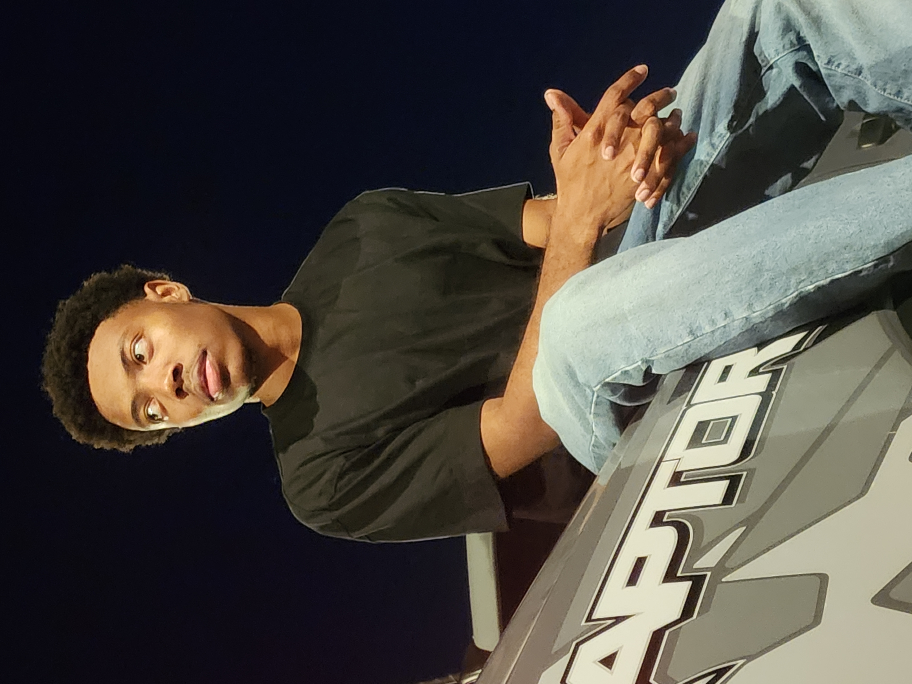

Finding Balance in Creative Work
September 24, 2025 by Kurt-William Thelwell

Over the years I’ve learned that creativity thrives when given structure. There's many things we want to accomplish in life, but life itself only lasts so long so truth be told waiting for perfection is a sure way to waste a lifetime.
Taking one step to chase your dreams, one step to enrich yourself with success and taking constant small actions to bring about the lifestyle you desire is where the essence of living can be found. I've learnt that by Creating daily, whether it’s photos, videos, or code - keeps ideas flowing.
When you give yourself permission to make imperfect work, iteration does the heavy lifting.
This post explores practical steps I use to balance ambitious projects with the small daily habits that actually move them forward: short sprints, and quick experiments that cost little time but profit me a lot.
How I Approach Web Design Projects
August 12, 2025 by Kurt-William Thelwell
Good web design starts with asking the right questions: Who is this for? What problem are we solving? Before opening any design software I spend time understanding the audience’s goals, frustrations, and context of use. This means looking at analytics, talking to real users, and mapping out user journeys to uncover the hidden friction points. With a clear picture of the people we’re designing for, each decision — from typography to button placement — gains purpose.
I create quick wireframes and low-fidelity prototypes to test assumptions early and cheaply. Feedback at this stage is gold; it allows me to iterate on visuals while keeping accessibility, performance, and scalability in mind rather than bolting them on later. I also document patterns and reusable components so future updates stay consistent and efficient.
For every project I keep a small checklist: responsive layout, clear hierarchy, accessible colors, and efficient assets. Those four pillars repeatedly make projects cleaner, faster to load, and easier to maintain for clients and collaborators alike. Over time, this approach has helped me deliver work that not only looks good but also supports the long-term goals of the people who use it.